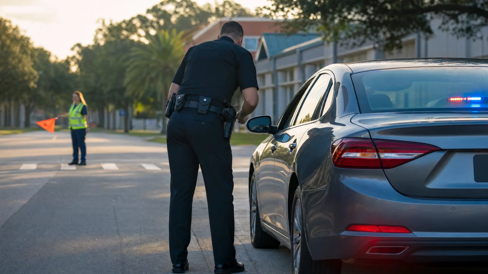

First Offense DWLS in Florida: Is It a Crime?

A first-offense driving while license suspended charge in Florida is a crime, not a traffic ticket. Under F.S. 322.34(2), it is a second-degree misdemeanor. The only thing separating it from a civil citation is whether the State can prove you knew about the suspension.
How does a traffic stop turn into a criminal charge?
Almost nobody gets pulled over for driving on a suspended license. The stop starts with something else: speeding in a school zone, a dead tag light, or a holiday saturation patrol looking for impaired drivers. The officer runs your license from the patrol car, and the return says suspended.
Palm Beach County deputies reported 149 stops and 17 criminal citations during Labor Day weekend patrols this month, according to CBS12. Those patrols were aimed at impaired drivers. The criminal citations are the byproduct.
Orlando's new school-zone speed cameras went live on August 11, as ClickOrlando reported. A camera notice goes to the vehicle's registered owner and never checks license status. A live stop by an officer in the same school zone does. In unincorporated Orange County, deputies still make those stops in person.
The citation you get may not be a ticket at all. Under F.S. 316.650, the same uniform citation form doubles as a notice to appear for a criminal traffic offense. If the criminal box is checked, you have a court date in county criminal court, not a fine you can pay online.
The roadside admission problem
The officer will usually ask whether you knew your license was suspended. “I’ve been meaning to take care of it” is an admission, and an admission proves knowledge by itself. You can decline to answer. You cannot take the answer back.
What does the State have to prove?
Three things: your license was suspended, you were driving, and you knew. The first two are usually easy. The knowledge element is where a first-offense driving while license suspended case is won or lost.
The State can prove knowledge three ways: a prior citation for the same thing, your admission at the window, or a mailed notice. If a citation or court order suspending you appears in your driving record, the law presumes you knew.
Under F.S. 322.251, the Department of Highway Safety and Motor Vehicles gives notice by mailing the suspension order to the last address on your driver record. Mailing is enough. The Florida Supreme Court held in Anderson v. State that the State does not have to prove you ever opened the letter.
That rule has a gap. If the record shows a notice went out but not where, or nothing shows your address at the time, the proof fails. A Florida appellate court reversed a conviction on exactly that gap. But “I never got the letter,” by itself, rarely wins.
What happens on a second or third offense?
The first case sets the floor. A second conviction is a first-degree misdemeanor, punishable by up to a year in jail and a $1,000 fine. A third conviction carries a mandatory minimum of ten days in jail.
Is the third offense a felony? Usually not. Since a 2019 amendment, a third conviction is a felony only in narrow cases. The current or most recent prior suspension must come from a DUI, a test refusal, a crash causing death or serious injury, or fleeing and eluding.
The bigger trap is habitual traffic offender status. Under F.S. 322.264, three convictions within five years for driving while suspended trigger a five-year revocation, with no hardship license during the first year. Driving during that revocation is a third-degree felony.
Isaiah’s Law, effective July 1, 2026, added driving without a valid license to that list. A no-valid-license conviction now counts toward the three. That changes the math in our earlier post on DWLSR versus no valid license, so read its escalation section with this update in mind.
A withhold still counts toward habitual offender status
A plea with adjudication withheld does not keep the case off the habitual traffic offender count. The Florida Supreme Court said so in Raulerson v. State, and the department applies it. The one exception is the noncriminal disposition route discussed below.
Does it matter why your license was suspended?
Yes, in two ways. Many suspensions trace back to money: an unpaid ticket, a missed traffic school deadline, lapsed insurance, or child support.
First, the presumption of knowledge does not apply to a suspension for unpaid fines or financial responsibility. The State has to prove mailing to your address the old-fashioned way.
Second, under F.S. 322.34(10), a financial suspension can never become a felony. A first violation is a second-degree misdemeanor and every later one is a first-degree misdemeanor, as long as you have no prior forcible felony.
What should you do before your court date?
Fix the suspension first. The charge is about your status on the day of the stop, but what happens in court depends heavily on your status on the day of court. A driver who walks in reinstated has options a suspended driver does not.
F.S. 318.14(10) offers one noncriminal exit. It applies if the suspension was for a missed court date, an unpaid civil penalty, or a missed driver improvement course. You plead no contest and show the clerk proof that your license is reinstated before the court date.
Adjudication is then withheld. Under subsection (11) of the same statute, that withhold is not a conviction, so it does not count toward habitual traffic offender status. The election is available once every 12 months and three times total.
Before your first court date
- Pull your complete driver record: it shows every suspension, the reason, and when and where notice was mailed.
- Find and clear the underlying suspension: pay the fine, finish the course, file the insurance proof, or resolve the child support order.
- Do not plead at arraignment to get it over with: a withhold on a criminal charge still counts toward habitual offender status.
- Know which court you are in: a criminal notice to appear goes to county criminal court. Our guide to your first traffic court hearing covers the basics.
Timing matters. The Department of Highway Safety and Motor Vehicles runs statewide enforcement campaigns around major holidays. Its summer Arrive Alive campaign ran June 1 through July 31, 2026, and the department says troopers are on the road year-round. The gap between the stop and your arraignment is the window to fix the suspension.
How a Criminal Defense Attorney Can Help
If you're facing first-offense driving while license suspended charges in Orlando, an experienced defense attorney can test the State's proof of knowledge and work to clear the suspension before court. As a former State Trooper and Deputy Sheriff, I understand how law enforcement builds these cases—and how to challenge them effectively.
In practice, that means pulling the driver record to see what notice the department mailed and where. It also means clearing the suspension early so the noncriminal exit stays open.
This article is general information about Florida law, not legal advice for your situation. Every case turns on its own record and its own facts.
Facing Driving While License Suspended, First Offense Charges?
If a traffic stop this school year turned into a suspended-license charge, contact Lotter Law in Orlando for a consultation before your court date. The underlying suspension can be addressed while options are still open.
Contact Lotter Law at 407-500-7000 for a free consultation.

Jeff Lotter
Criminal Defense Attorney | Former State Trooper
Jeff Lotter is an Orlando criminal defense attorney and former Florida Highway Patrol trooper. He uses his law enforcement background to build stronger defenses for clients facing criminal charges.
Related Articles
Orlando School Zone Tickets: Fines, Points & Your Options
Orange County schools reopen Aug. 11. Learn how Florida school zone speeding, bus stop-arm, and hands-free tickets differ — and which ones c…
HTO Status Removed: How We Got a Client's License Back
You Got a Ticket - Are You Under Arrest? NTA vs Traffic...
DWLSR vs No Valid License in Florida: One Is a Crime, One Isn't
Driving on a suspended license (DWLSR) is a crime that can mean jail time. No valid license is a civil infraction. Learn the critical differ…